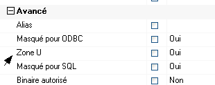

Zone-U
La zone-U est une donnée présente dans chaque table de Divalto, pour permettre aux partenaires de rajouter des données dans les tables.
Exemple : la table Art contient une zone UArt
Pour qu'une Zone-U soit extensible, il faut que le paramètre <Zone U> soit à <Oui> dans les propriétés de la donnée.

Add-On
Un add-on est une extension d'un programme, une surcharge dans le langage d'Harmony.
Il comprend :
des surcharges de dictionnaires de données
des surcharges de modules
Exemple : on pourra développer un add-on Maroquinerie sur Divalto, pour prendre en compte les spécificités des maroquiniers.